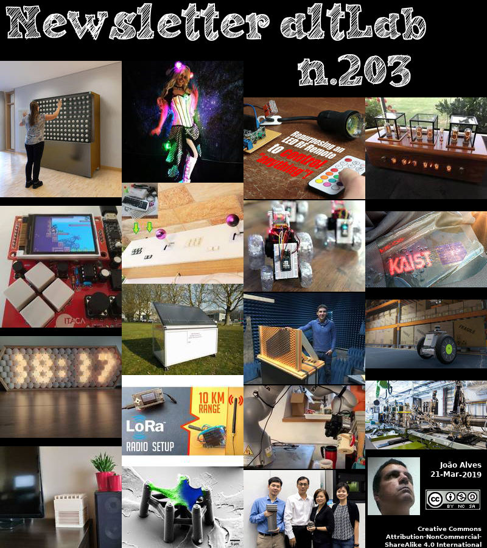

2019-03-21 - Nº 203


Editorial
Esta é a Newsletter Nº 203 que se apresenta com o mesmo formato que as anteriores. Se gostar da Newsletter partilhe-a!
Todas as Newsletters encontram-se indexadas no link.
Esta Newsletter tem os seguintes tópicos:
Faz hoje anos que nascia, em 1768, Joseph Fourier. Este matemático e egiptólogo francês exerceu forte influência na física matemática através de sua Théorie analytique de la chaleur (1822; Teoria analítica do calor). Ele introduziu uma série matemática infinita para auxiliar na resolução de equações de condução. Esta técnica de análise permite que a função de qualquer variável seja expandida numa série de senos de múltiplos da variável, que é agora conhecida como a série de Fourier. As suas equações geraram muitas novas áreas de estudo na matemática e física, incluindo o ramo da óptica designado para ele, foram posteriormente aplicados a outros fenómenos naturais, como marés, clima e manchas solares.
Faz também anos hoje que nascia, em 1888, George David Birkhoff. Este matemático norte-americano foi responsável por ter formulado o teorema ergódico. Como o primeiro dinamista americano, Birkhoff começou onde Poincaré parou, ganhando distinção em 1913 com sua prova do Último Teorema Geométrico de Poincaré, um caso especial do problema dos três corpos. Embora principalmente especializado em geometria, ele descobriu novos métodos simbólicos. Ele viu além da teoria das oscilações, criou uma teoria rigorosa do comportamento ergódico e previu modelos dinâmicos para o caos. O seu teorema ergódico transformou a hipótese ergódica de Maxwell-Boltzmann da teoria cinética dos gases (à qual excepções são conhecidas) num princípio rigoroso através do uso da teoria da medida de Lebesgue. Ele também produziu um modelo matemático da gravidade.
Por fim, faz hoje anos que nascia, em 1936, Simon Min Sze. Nascido em Nanjing, China cresceu em Taiwan. Ele ficou conhecido pelo seu trabalho em física e tecnologia de semicondutores, incluindo a sua descoberta com Dawon Kahng, do transístor de porta flutuante, hoje amplamente usado em dispositivos de memória de semicondutores não-voláteis. Ele escreveu e editou muitos livros, incluindo Physics of Semiconductor Devices, um dos textos mais citados no seu campo. Sze recebeu o Prémio J J Ebers em 1991 pelo seu trabalho em dispositivos electrónicos.
Nesta semana que passou ficámos a saber que a missão da NASA ao asteróide Bennu revelou as primeiras observações de perto de plumas de partículas em erupção na superfície de um asteróide. O Bennu também se revelou mais robusto do que o esperado, desafiando a equipa a alterar os seus planos voo e de recolha de amostras, devido ao terreno acidentado.
Hoje começou o Pixels Camp no Pavilhão Carlos Lopes em Lisboa. Nesta terceira edição inscreveram-se mais de 1300 participantes e existem centenas de Talks para ir. Existe também o Hackaton no qual estamos a participar assim como diversos passatempos. Neste evento de 3 dias iremos poder ainda vez o Quizshow, ver filmes como o "The Imitation Game", "Ready Player One", "Edge of Tomorrow" e "Source Code".
Na Newsletter desta semana apresentamos diversos projetos de maker. É apresentado o livro Microservice Architecture e a revista Hackspace Nº17.
 João Alves ([email protected])
João Alves ([email protected])
O conteúdo da Newsletter encontra-se sob a licença  Creative Commons Attribution-NonCommercial-ShareAlike 4.0 International License.
Creative Commons Attribution-NonCommercial-ShareAlike 4.0 International License.
Novidades da Semana
NASA Mission Reveals Asteroid Has Big Surprises
"A NASA spacecraft that will return a sample of a near-Earth asteroid named Bennu to Earth in 2023 made the first-ever close-up observations of particle plumes erupting from an asteroid’s surface. Bennu also revealed itself to be more rugged than expected, challenging the mission team to alter its flight and sample collection plans, due to the rough terrain. Bennu is the target of NASA’s Origins, Spectral Interpretation, Resource Identification, Security-Regolith Explorer (OSIRIS-REx) mission, which began orbiting the asteroid on Dec. 31. Bennu, which is only slightly wider than the height of the Empire State Building, may contain unaltered material from the very beginning of our solar system. “The discovery of plumes is one of the biggest surprises of my scientific career,” said Dante Lauretta, OSIRIS-REx principal investigator at the University of Arizona, Tucson. “And the rugged terrain went against all of our predictions." [...]
Outras Notícias
Revving Robotics: NVIDIA Isaac SDK Brings Modern AI to Autonomous Machines
"obotics developers are off to the races creating autonomous machines of the future. We’re fueling their efforts with the NVIDIA Isaac SDK, which will be publicly available soon as a free robotics developer toolbox for accelerating innovation and deployment. NVIDIA founder and CEO Jensen Huang announced the news today on stage to a packed crowd at our GPU Technology Conference. Building robots has historically been difficult. Delivering robot intelligence has been deterred by a lack of unified and easy-to-use software and hardware platforms. Robotics development at scale has, until recently, required custom programming to simulate robots in operation." [...]
Hayabusa2 probes asteroid for secrets
"The first data received from the Hayabusa2 spacecraft in orbit of asteroid Ryugu helps space scientists explore conditions in the early solar system. The space probe gathered vast amounts of images and other data which gives researchers clues about Ryugu's history, such as how it may have formed from a larger parent body. These details in turn allow researchers to better estimate quantities and types of materials essential for life that were present as Earth formed. "The ground shook. My heart pounded. The clock counted." [...]
MPLAB Harmony Version 3.0 Unifies Software Development Framework for PIC and SAM Microcontrollers
"Enhanced tool chain accelerates development with modular software downloads and simplified drivers From basic device configuration to Real Time Operating System (RTOS)-based designs, 32-bit microcontroller (MCU) applications vary vastly in complexity and development models. To help developers simplify and scale designs, Microchip Technology Inc. (Nasdaq: MCHP) today announced a unified software framework with the release of MPLAB® Harmony version 3.0 (v3), extending support for SAM MCUs for the first time. The powerful development environment is progressively adding support across Microchip’s entire portfolio of 32-bit PIC and SAM MCUs, giving developers more options to meet different end application requirements. The new version also adds enhancements to streamline designs, such as royalty-free security software through a partnership with wolfSSL, as well as modular software downloads that allow designers to only download select portions of software based on the needs of an application. MPLAB Harmony v3 provides a unified platform with flexible choices spanning architectures, performance and application focus, enabling developers to learn and maintain a single environment on their computer. To support varying software development models from basic device configuration to Real Time Operating System (RTOS)-based applications, MPLAB Harmony version 3.0 relieves designers from having to download the entire software suite when they only need to use small elements or components of it." [...]
US Department of Energy and Intel to Deliver First Exascale Supercomputer
"Targeted for 2021 Delivery, The Argonne National Laboratory Supercomputer will Enable High-Performance Computing and Artificial Intelligence at Exascale Intel Corporation and the U.S. Department of Energy (DOE) will deliver the first supercomputer with a performance of one exaFLOP in the United States. The system being developed at DOE’s Argonne National Laboratory* in Chicago, named “Aurora,” will be used to dramatically advance scientific research and discovery. The contract is valued at more than $500 million and will be delivered to Argonne National Laboratory by Intel and sub-contractor Cray Inc.* in 2021. The Aurora system’s exaFLOP of performance – equal to a “quintillion” floating point computations per second – combined with an ability to handle both traditional high-performance computing (HPC) and artificial intelligence (AI) will give researchers an unprecedented set of tools to address scientific problems at exascale. These breakthrough research projects range from developing extreme-scale cosmological simulations, discovering new approaches for drug response prediction and discovering materials for the creation of more efficient organic solar cells. The Aurora system will foster new scientific innovation and usher in new technological capabilities, furthering the United States’ scientific leadership position globally." [...]
Ciência e Tecnologia
Researchers Put Machine Learning on Path to Quantum Advantage
"There are high hopes that quantum computing’s tremendous processing power will someday unleash exponential advances in artificial intelligence. AI systems thrive when the machine learning algorithms used to train them are given massive amounts of data to ingest, classify and analyze. The more precisely that data can be classified according to specific characteristics, or features, the better the AI will perform. Quantum computers are expected to play a crucial role in machine learning, including the crucial aspect of accessing more computationally complex feature spaces – the fine-grain aspects of data that could lead to new insights. In a new Nature research paper entitled “Supervised learning with quantum enhanced feature spaces,” we describe developing and testing a quantum algorithm with the potential to enable machine learning on quantum computers in the near future. We’ve shown that as quantum computers become more powerful in the years to come, and their Quantum Volume increases, they will be able to perform feature mapping, a key component of machine learning, on highly complex data structures at a scale far beyond the reach of even the most powerful classical computers." [...]
Polymers join forces to deliver
"Odorless route to polymeric delivery systems is safer and cheaper An affordable, heavy metal- and odor-free method for making hollow polymer nanostructures has been designed by A*STAR researchers. These structures could find use as delivery systems for personal care products, drugs and agrochemicals. The use of hollow polymer nanostructures for carrying — and preserving the stability of — active ingredients, such as salicylic acid, vitamins, drugs and pesticides, is booming. These shells release cargo on demand in response to triggers such as water. Current manufacturing methods are imperfect, due to either cost, environmental or safety reasons. Significant efforts are therefore being devoted to developing alternatives." [...]
Powering devices - with a desk lamp?
"Batteries power most of our devices, and even some cars. But researchers now report in ACS Applied Materials & Interfaces a step toward running electronic devices in homes and offices on the light coming from lamps scattered around the room. The team developed special light harvesters, like those used for solar power, optimized to produce energy from ambient indoor lighting. Electronic gadgets increasingly are becoming indispensable. Smart thermostats learn when to turn up the heat, sensors set off alarms when windows are opened, and cell phones keep people connected. In the coming “internet of things,” more and more of these items will be connected wirelessly to the internet, communicating to each other and performing the functions of everyday life." [...]
ITMO Scientists Created a Surface Allowing Loss-Free Propagation and Management of Light
"Physicists from ITMO University have developed the first synthetic dielectric surface where the propagation of electromagnetic waves isn’t hampered by existing defects and can be manipulated. In the future, such a structure will enable the creation of more reliable optical devices and communication circuits. The findings in Applied Physics Letters. The project by the Russian Science Foundation. Most materials can be classed as either conductors or insulators: they either conduct the electric current, or they don’t. But there are some that do conduct electricity but only at the thin level of the surface." [...]
Ultrathin and ultrafast: scientists pioneer new technique for two-dimensional material analysis
"Discovery allows scientists to look at how 2D materials move with ultrafast precision. Using a never-before-seen technique, scientists have found a new way to use some of the world’s most powerful X-rays to uncover how atoms move in a single atomic sheet at ultrafast speeds. The study, led by researchers at the U.S. Department of Energy’s (DOE) Argonne National Laboratory and in collaboration with other institutions, including the University of Washington and DOE’s SLAC National Accelerator Laboratory, developed a new technique called ultrafast surface X-ray scattering. This technique revealed the changing structure of an atomically thin two-dimensional crystal after it was excited with an optical laser pulse. “Extending [surface X-ray scattering] to do ultrafast science in single-layer materials represents a major technological advance that can show us a great deal about how atoms behave at surfaces and at the interfaces between materials.” — Argonne scientist Haidan Wen Unlike previous surface X-ray scattering techniques, this new method goes beyond providing a static picture of the atoms on a material’s surface to capture the motions of atoms on timescales as short as trillionths of a second after laser excitation. Static surface X-ray scattering and some time-dependent surface X-ray scattering can be performed at a synchrotron X-ray source, but to do ultrafast surface X-ray scattering the researchers needed to use the Linac Coherent Light Source (LCLS) X-ray free-electron laser at SLAC." [...]
KU Leuven scientists crack the code for affordable, eco-friendly hydrogen gas
"Bioscience engineers at KU Leuven have created a hydrogen gas panel that produces hydrogen gas from moisture in the air. After ten years of development, the panel can now produce 250 litres per day – a world record, according to the researchers. Twenty of these panels could provide electricity and heat for one family for an entire winter. Under a watery sun, Professor Johan Martens and his research team roll the hydrogen gas panel onto the lawn in front of the Centre for Surface Chemistry and Catalysis at KU Leuven. The device looks like an ordinary solar panel. The engineers have attached a flask with water to the device so that we can see the hydrogen bubbles escape." [...]
New separation technique could lead to reduced carbon dioxide emissions
"A Washington State University research team has developed a new way to separate carbon dioxide out of industrial processes — an important key in reducing industrial carbon emissions that contribute to global warming. Led by Min‑Kyu Song, assistant professor in the School of Mechanical and Materials Engineering, and Ph.D. student Xiahui Zhang, the researchers developed a way to create hollow, nanorod‑shaped porous materials made of cobalt metal ions and organic molecules to separate the carbon dioxide in a way that works under real‑life conditions. They recently published their work in the journal, ACS Applied Materials and Interfaces. The work also includes researchers from Nanyang Technological University in Singapore. Because of concerns about global warming and climate change, researchers have been working to develop ways to capture, store and use the carbon dioxide that fossil fuel industries emit during energy production. Carbon capture systems have to be able to selectively grab carbon dioxide out of the exhaust gases under the dynamic conditions that exist in a power plant." [...]
Quantum sensing method measures minuscule magnetic fields
"MIT researchers find a new way to make nanoscale measurements of fields in more than one dimension. A new way of measuring atomic-scale magnetic fields with great precision, not only up and down but sideways as well, has been developed by researchers at MIT. The new tool could be useful in applications as diverse as mapping the electrical impulses inside a firing neuron, characterizing new magnetic materials, and probing exotic quantum physical phenomena. The new approach is described today in the journal Physical Review Letters in a paper by graduate student Yi-Xiang Liu, former graduate student Ashok Ajoy, and professor of nuclear science and engineering Paola Cappellaro. The technique builds on a platform already developed to probe magnetic fields with high precision, using tiny defects in diamond called nitrogen-vacancy (NV) centers. These defects consist of two adjacent places in the diamond’s orderly lattice of carbon atoms where carbon atoms are missing; one of them is replaced by a nitrogen atom, and the other is left empty." [...]
An algorithm to rule them all
"A powerful machine-learning technique enables biologists to analyze enormous data sets Researchers at A*STAR have compared six data-analysis processes and come up with a clear winner1 in terms of speed, quality of analysis and reliability. The top performer took large, complex biological data sets and spat out key relations between parameters (such as grouping blood and marrow cells according to cell type) in a fraction of the time of the other techniques. Measurements on single cells alone can generate huge data sets that have anywhere from 20 to more than 20,000 parameters. The mind-boggling size and complexity of biological data sets make it extremely challenging for scientists to uncover meaningful relationships between parameters. Mathematicians have developed statistical techniques that simplify complex data sets by grouping data according to their similar characteristics. The most well-known technique is principal component analysis (PCA), which was developed in the early twentieth century." [...]
Robot precisely moves objects it's never seen before
"Imagine that you’re in your kitchen, and you’re trying to explain to a friend where to return a coffee cup. If you tell them to “hang the mug on the hook by its handle,” they have to make that happen by doing a fairly extensive series of actions in a very precise order: noticing the mug on the table; visually locating the handle and recognizing that that’s how it should be picked up; grabbing it by its handle in a stable manner, using the right combination of fingers; visually locating the hook for hanging the mug; and finally, placing the cup on the hook. If you think about it, it’s actually quite a lot of stuff - and we humans can do it all without a moment’s hesitation, in the space of a couple of seconds. Meanwhile, for all the progress we’ve made with robots, they still barely have the skills of a two-year-old. Factory robots can pick up the same object over and over again, and some can even make some basic distinctions between objects, but they generally have trouble understanding a wide range of object shapes and sizes, or being able to move said objects into different poses or locations. That may be poised to change: researchers from MIT’s Computer Science and Artificial Intelligence Laboratory (CSAIL) say that they’ve developed a new system that allows robots to do many different pick-and-place tasks, from hanging mugs to putting shoes on shelves, without having ever seen the objects they’re interacting with." [...]
Nanocrystal 'Factory' Could Revolutionize Quantum Dot Manufacturing
"North Carolina State University researchers have developed a microfluidic system for synthesizing perovskite quantum dots across the entire spectrum of visible light. The system drastically reduces manufacturing costs, can be tuned on demand to any color and allows for real-time process monitoring to ensure quality control. Over the last two decades, colloidal semiconductor nanocrystals, known as quantum dots (QDs), have emerged as novel materials for applications ranging from biological sensing and imaging to LED displays and solar energy harvesting. The new system can be used to continuously manufacture high-quality QDs for use in these applications. “We call this system the Nanocrystal (NC) Factory, and it builds on the NanoRobo microfluidic platform that we unveiled in 2017,” says Milad Abolhasani, an assistant professor of chemical and biomolecular engineering at NC State and corresponding author of a paper on the work. “Not only can we create the QDs in any color using a continuous manufacturing approach, but the NC Factory system is highly modular,” Abolhasani says." [...]
Quantum researchers show vast new potential for radar technology
"Researchers at the Institute for Quantum Computing (IQC) performed the first demonstration of quantum-enhanced noise radar, opening the door to promising advancements in radar technology. The researchers showed how the quantum process can outperform a classical version of the radar by a factor of 10, enabling the detection of objects that are faster, smaller, or further away – all while making the radar less detectable to targets. “We are applying technology developed for quantum computing to immediate, practical situations,” said Christopher Wilson, a professor in the Department of Electrical and Computer Engineering at the University of Waterloo and principal investigator of the Engineered Quantum Systems Lab at IQC. “Our results show a promising improvement for radar, an important real-world application, using quantum illumination.” In the lab, Wilson’s team performed an experiment to directly compare the performance of a quantum protocol to a classical protocol. The researchers generated entangled photons using a device they designed to produce multiphoton entanglement of microwave light at frequencies near 5 GHz—the same frequency band as wireless communications used by cellphones and Wi-Fi connections. Next, they created a classical source of photons that, on the surface, replicated the signals produced by the quantum device, but without the entanglement." [...]
Strength in numbers for 3D printing
"Hierarchical microstructure improves the performance of metallic material Additive manufacturing, also called 3D printing, is commonly used to build complex three-dimensional objects, layer by layer. A*STAR researchers have shown that the process can also help to make a high-performance alloy even stronger1. Cobalt-chromium-iron-nickel-manganese (CoCrFeNiMn) is known as a high entropy alloy. Discovered in 2004, it is particularly good at withstanding fractures under harsh environmental conditions, such as low temperatures. To make an object from the alloy, researchers typically pour the molten metal into a cast, allow it to cool, and then machine it into the desired shape. However, this can be a time-consuming and costly way of making complex components." [...]
Turning a molecule into a coherent two-level quantum system
"Organic dye molecules are commonly known from color pigments or from fluorescence microscopy in biology. Although as any other molecule, they are fundamentally quantum mechanical objects made of a small number of atoms, they are usually not associated with quantum technologies, not even within the physics community. The reason is that the degrees of freedom related to internal vibrations and rotations make molecules particularly susceptible to perturbations from their environments. This compromises the coherent evolution of a quantum mechanical system. Physicists at the Max Planck Institute for the Science of Light (MPL) and FAU have now succeeded in turning an organic molecule into a nearly ideal quantum system with only two well-defined energy levels. The experiments reported in Nature Physics set an important step because they demonstrate some basic building blocks for quantum networks based on organic materials." [...]
Graphene reveals electrons move like viscous liquids
"Researchers at The University of Manchester in the UK have discovered that electrons in graphene act like a very unique liquid. The movement of electron fluid in graphene has, for the first time, been observed to exist with two separate viscosities showing that the Hall effect - a phenomenon well known for more than a century - is no longer as universal as it was thought to be. The classical Hall effect is no longer as universal as it was thought to be, in a research paper published in Science this week, a group led by Prof Sir Andre Geim and Dr Denis Bandurin found that the Hall effect can even be significantly altered in graphene. The phenomenon was observed at room temperature – something that will have important implications for when making electronic devices from graphene. Just like molecules in gases and liquids, electrons in solids frequently collide with each other and so they can also behave like fluids too. Such electron fluids are ideal to find new behaviours of materials in which electron-electron interactions are particularly strong." [...]
New Study Examines How Tiny Gas Pockets Affect 3D Printing
"Additive manufacturing's promise to revolutionize industry is constrained by a widespread problem: tiny gas pockets in the final product, which can lead to cracks and other failures. New research published in Science, led by researchers from Carnegie Mellon University and Argonne National Laboratory, has identified how and when these gas pockets form, as well as a methodology to predict their formation — a pivotal discovery that could dramatically improve the 3D printing process. "The research in this paper will translate into better quality control and better control of working with the machines," said Anthony Rollett, professor of materials science and engineering at Carnegie Mellon. "For additive manufacturing to really take off for the majority of companies, we need to improve the consistency of the finished products. This research is a major step in that direction." The scientists used the extremely bright high-energy X-rays at Argonne's Advanced Photon Source, a Department of Energy Office of Science User Facility, to take super-fast video and images of a process called Laser Power Bed Fusion, in which lasers are used to melt and fuse material powder together." [...]
Supercomputers to help supercharge ceramic matrix composite manufacturing
"ORNL-, Rolls Royce-developed software creates virtual sandbox for gas turbine engine producers New software capabilities developed by computational scientists at the US Department of Energy’s (DOE’s) Oak Ridge National Laboratory (ORNL) and the Rolls Royce Corporation could soon help engineers lift the gas turbine engines of aircraft and power plants to higher efficiencies. Ceramic matrix composite (CMC) materials—tough, lightweight materials capable of withstanding high temperatures upwards of 2,000° F—are poised to replace metal alloy parts in the hottest zones of turbine engines, allowing for higher fuel efficiency and fewer emitted pollutants. Manufacturing CMC parts, however, has proven time consuming and expensive because of the complexities of creating advanced composite materials. Lowering the cost of production through supercomputer-aided optimization of CMC manufacturing processes could help overcome these hurdles. Using modeling and simulation, ORNL and Rolls Royce are developing tools to create a virtual sandbox for CMC manufacturers to test design parameters and identify strategies to make CMC production more reliable. Partnering through DOE’s High Performance Computing for Manufacturing (HPC4Mfg) program, the collaboration contributed to the first physics-based software focused on fine-tuning CMC manufacturing." [...]
"Particle robot" works as a cluster of simple units
"Loosely connected disc-shaped “particles” can push and pull one another, moving en masse to transport objects. Taking a cue from biological cells, researchers from MIT, Columbia University, and elsewhere have developed computationally simple robots that connect in large groups to move around, transport objects, and complete other tasks. This so-called “particle robotics” system — based on a project by MIT, Columbia Engineering, Cornell University, and Harvard University researchers — comprises many individual disc-shaped units, which the researchers call “particles.” The particles are loosely connected by magnets around their perimeters, and each unit can only do two things: expand and contract. (Each particle is about 6 inches in its contracted state and about 9 inches when expanded.) That motion, when carefully timed, allows the individual particles to push and pull one another in coordinated movement. On-board sensors enable the cluster to gravitate toward light sources." [...]
Precision Control of Complex Electrochemical Interfaces for Separations
"Researchers working within PNNL’s Separations Science program succeeded in coupling a highly controlled way of modifying surfaces, called ion soft landing, with a PNNL-designed and built electrochemical cell to achieve precise control over the chemical composition of complex interfaces. Once achieved, this allowed them to make atom-by-atom changes to electrodes to study the effect on performance and stability. The experiments, combined with theoretical calculations by collaborators in Spain, were published in an ACS Nano article titled “Controlling the Activity and Stability of Electrochemical Interfaces Using Atom-by-Atom Metal Substitution of Redox Species.” They revealed that substitution of only one to three tungsten atoms by molybdenum atoms in complex metal-atom clusters resulted in a pronounced improvement in their electronic behavior, which controls how efficiently these species accept electrons for separation applications. In electrochemical devices used for separations, the interfaces are complex. A lot is going on at once as electroactive ions, solvent molecules, and supporting electrolytes interact, exchanging electrons and mass during charge transfer processes. To understand these processes, it is necessary to decouple the different charge transfer and ionic interactions occurring on electrodes." [...]
Unlocking the untapped potential of light in optical communications
"Scientists at Tokyo Tech have fabricated a multiplexer/demultiplexer module based on a property of light that was not being exploited in communications systems: the optical vortex. Such devices will be crucial for improving optical networks, which are the backbone of today's Internet, so that they can meet the traffic demands of tomorrow. In our communication-centered era, Internet traffic has been increasing rapidly. The massive amounts of data that travel through the Internet are enabled by huge backbone networks, usually involving millions of connections deployed using optical communication technology. Foreseeing that this increase in data flow will not stop anytime soon, researchers worldwide are searching for ways to further develop and improve optical communications. One ubiquitous technique in modern electronic communications is multiplexing, which is a way to maximize the use of the available bandwidth." [...]
True-meaning Wearable Displays: Self-powered, Washable and Wearable
"When we think about clothes, they are usually formed with textiles and have to be both wearable and washable for daily use; however, smart clothing has had a problem with its power sources and moisture permeability, which causes the devices to malfunction. This problem has now been overcome by a KAIST research team, who developed a textile-based wearable display module technology that is washable and does not require an external power source. To ease out the problem of external power sources and enhance the practicability of wearable displays, Professor Kyung Cheol Choi from the School of Electrical Engineering and his team fabricated their wearing display modules on real textiles that integrated polymer solar cells (PSCs) with organic light emitting diodes (OLEDs). PSCs have been one of the most promising candidates for a next-generation power source, especially for wearable and optoelectronic applications because they can provide stable power without an external power source, while OLEDs can be driven with milliwatts. However, the problem was that they are both very vulnerable to external moisture and oxygen. The encapsulation barrier is essential for their reliability." [...]
Sophisticated 3D measurement technology permits gesture-based human-machine interaction in real time
"Humans and machines will increasingly support each other in the workplace. For processes to be efficient, the machine must respond to the human worker without any time delay. Thanks to sophisticated high-speed 3D measurement and sensor technology, researchers at the Fraunhofer Institute for Applied Optics and Precision Engineering IOF are making this real-time interaction possible. They will be demonstrating how this works in practice at the Hannover Messe trade show from April 1 to 5, 2019 using the example of an interactive wall of spheres that reacts immediately, contact-free and in three dimensions to every movement of a person standing in front of it (Hall 2, Booth C22). As gesture control represents a seamless interface between humans and machines, more and more machines, robots and devices are able to respond to gestural cues. Researchers at Fraunhofer IOF in Jena are raising human-machine interaction to a new level: the high-speed 3D measurement and sensor technology developed in the 3D-LivingLab research project (see “3D-LivingLab” box) enables them to capture and interprete even complex movements – and does so in real time." [...]
Putting photons in jail ut researchers lock up light inside a crystal
"A miniature prison for photons, that is the nanocavity discovered by scientists of the University of Twente. It is an extremely small cavity surrounded by an optical crystal – a structure of pores etched in two perpendicular directions. Confining photons in this 3D cavity may lead to tiny and efficient lasers and LEDs, storage of information or ultrasensitive light sensors. The results are published in Physical Review B, one of the journals of the American Physical Society. Techniques for trapping light are at the basics of photonics. A well-known cavity consists of two mirrors between which a standing wave will be formed of a certain colour of light, depending on the distance between the mirrors." [...]
Materials Design in 3D: from the Molecule to the Macrostructure
"“3D Matter Made to Order” Cluster of Excellence of KIT and Heidelberg University Starts and Focuses on Printed Three-dimensional Design Structures Additive processes, such as 3D printing, can be used to produce nearly any structure, even in the nanoscale. Depending on the “ink” applied, the structures produced fulfill various functions: from hybrid optical chips to bioscaffolds for cell tissue. Within the Cluster of Excellence “3D Matter Made to Order,” researchers of Karlsruhe Institute of Technology (KIT) and the University of Heidelberg plan to raise three-dimensional additive manufacture to the next level. The goal is to develop new technologies for flexible, digital printing of structures from the molecular to the macroscopic scale. “3D printing opens up big opportunities in the micro- and nanoscale in particular. But the challenges to make these options accessible are equally big,” says Martin Wegener, Professor of the Institute of Applied Physics and Director of the Institute of Nanotechnology of KIT as well as spokesperson of the Cluster of Excellence “3D Matter Made to Order” (3DMM2O)." [...]
Documentação
A documentação é parte essencial do processo de aprendizagem e a Internet além de artigos interessantes de explorar também tem alguma documentação em formato PDF interessante de ler. Todos os links aqui apresentados são para conteúdo disponibilizado livremente pelo editor do livro.
Microservice Architecture
"Have you heard about the tremendous success Amazon and Netflix have had by switching to a microservice architecture? Are you wondering how this can benefit your company? Or are you skeptical about how it might work? If you’ve answered yes to any of these questions, this practical book will benefit you. You'll learn how to take advantage of the microservice architectural style for building systems, and learn from the experiences of others to adopt and execute this approach most successfully. " [...]
HackSpace magazine #17
"Arduinos let you add programable control to your projects in a simple, standardised way. We take a look at how to get started, our favourite Arduino-compatible boards and addons and how to use the Arduino IoT Cloud to make simple, secure, internet-connected devices The ultimate Flappy Bird controller Upcycling Discover a concrete lathe" [...]
Projetos Maker
Diversos Projetos interessantes.
Garage Door Monitor
"There are lots of garage door monitor projects on hackster.io and other Maker sites. Many are single-purpose solutions. I wanted a project that would be extensible, to build on the skills learned for future IOT projects. In fact, I already had a project in mind, a general notification platform called the Kinetic Courier. That project could include a garage door monitor as an example notification trigger. Also, I wanted a platform that was well-documented and well-supported." [...]
Simple Wire Length Cutting Tool
"This device runs a desired length and quantity of wires and cuts each length. Hello world! I would like to share this project I've been working using for over a year now. Pulling thousands of 22awg wires 8ft long off a 5000ft spool is no fun task. It's boring, it's prone to inaccuracy, it's boring, it takes 2 people 2 days to manually pull 706 22awg wires and it's boring. If you only have 1 spool (pulling 1 wire at a time) it takes much longer." [...]
Game Controller Made 99.9% From Trash
"Few years ago, I got some broken keyboards from my ex-employer. I always wanted to have a personal arcade gaming style game controller, so this was the perfect ingredient for this project. The other materials that I used to complete this project included: leftover plywood pieces, a leftover tile piece, small screws from broken toys and electronics, 2 broken flat 3 pin plugs, white and black plastic containers, tyre inner tube, 2 bicycle wheel spokes, Christmas balls or ball shape plastic container lids (like the green shampoo bottle in the above picture) and a small piece of iron sheet. " [...]
Diy Step/Dir Laser Galvo Controller
"Hi, in this Instructable, I want to show you how you can build your own step / dir interface for ILDA standard galvo laser scanners. As you might know I am also the inventor of the "DIY-SLS-3D-Printer" and the "JRLS 1000 DIY SLS-3D-PRINTER" and while I was building these machines I have start tinkering about how these printers will perform, if I will use a Galvo Scanners instead of a cartesian movement system. However in these days I don't had the knowledge to program a controller for a galvo scanner. So I have used an existing firmware with cartesian motion. But today and after some research I found an instructable where the author uses an arduino to create a DIY Laser Galvo show. I thought this is exactly what I am searching for, so I have ordered the parts like in his instructable and made some experiments." [...]
DS1302 Clock With a 2.4 TFT LCD
"Hello there! Today i will show you how to make a simple clock with a RTC and a TFT LCD for Arduino. Simple project for beginners, it can be assembled and set up for less than 30 minutes. A few months ago i decided to make myself a simple clock with this 2.4 inch LCD. I am using it in the living room and it is a good night light. It prevents me from kicking in to the furniture by accident; and mom likes it too :) This RTC module is relatively inexpensive and very easy to use with Arduino." [...]
Repurposing an LED RF Remote to Control "anything"!
"In this project I will show you how to repurpose an LED RF remote in order to control pretty much anything you want with it. That means we will have a closer look at the transmission process of the RF remote, read in the sent data with an Arduino C and use it to control a solid state relay. This way I switch on/off LED lamps, but you can use this technique for other appliances. Let's get started! " [...]
8x8 Dot Matrix
"Make a cheap and good looking LED matrix. Theory of LED Dot Matrix Display In a dot matrix display, multiple LEDs are wired together in rows and columns. This is done to minimize the number of pins required to drive them. For example, a 8×8 matrix of LEDs (shown below) would need 64 I/O pins, one for each LED pixel. By wiring all the anodes together in rows (R1 through R8), and cathodes in columns (C1 through C8), the required number of I/O pins is reduced to 16. Each LED is addressed by its row and column number." [...]
BridgeDuino: A Wireless Arduino HUB and Shield
"BridgeDuino (R 0.11) is a Swiss army knife PCB for rapid networking of inexpensive wireless communication modules. Breadboards are super for one-off experiments. But after prototyping half a dozen wireless prototypes involving more than just two Arduinos, the wiring mistakes and associated debugging grew more time consuming. BridgeDuino facilitates rapid multi-node prototyping & testing of networks based on popular, cheap wireless modules and the Arduino platform. I did not wish to make a separate PCB for each of the various wireless components, so I figured why not one PCB to rule them all. I also wanted a PCB that can act as a shield to Arduino Uno as well as work with the inexpensive and low-power Arduino ProMini." [...]
Arduino Battery SMS Bus Reader
"A simple SMS bus reader for most smart batteries Reads the data from the TI chip set used in many smart battery packs The 2x 1K resistors on data and clock inputs can be removed if you can’t get data This was added for protection during testing other batteries with USB connection. " [...]
XIV Nixie Clock
"XIV Nixie Clock V1 Project Date: December 2018 March 2019 WARNING: Nixie tubes require 180v to operate, this is a dangerous high voltage and you need to handle the tubes and the supporting circuitry with great caution. If you would like to use Nixie styled tubes in your project, which are safer to handle and use, then consider the VFD type of tube, similar character style, and style of tube but these tubes only require 27v to operate. This is my first Nixie styled clock I have constructed. The clock actually consists of two clocks, the first being a 6 x IN-18 tube clock which is mounted on the clocks top and displays both time and date. The second clock, this time based on 6 x IN-12A and 2 x IN-15A nixie tubes displays at the front of the clock and can display, time, date, pressure (with units and trend), temperature (both Centigrade and Fahrenheit) and, humidity (with units and trend). The time and date are separated with two single neon lamp-based separators, while only one of these lamps is displayed, to represent a decimal point, when the pressure, humidity or temperature is displayed." [...]
Sound Card ECG
"The Sound Card ECG program provides a simple interface to view and measure ECG signals obtained through the sound card (using a line-in or microphone jack). This is my heartbeat rate as I comfortably used the computer, then took a few minutes to watch a scary video (which elevated my heartrate for a few minutes in the middle). " [...]
LoRa ESP32 Radios - Easy Getting Started Tutorial
"Easily get started with LoRa Radios without much wiring. This is possible by using stackable modules from DFRobot. Today we are going to make a project which is basically about setting up LoRa radios to talk with each other in the easiest way possible. Here the microcontroller that I have used is the ESP32, which is connected to LoRa boards of 915MHz, I have also attached an OLED display to one of the Radio so that the packet information is visible. All the modules used in this project are from DFRobot as the pin compatibility is there for these modules, So I do not recommend using modules of different manufacturers. So let's get started!" [...]
ESP32 Fall Detector
"Here is a list of the parts used: DFRobot ESP32 ESP-WROOM Module 1 - https://www.dfrobot.com/product-1559.html Silicon Labs CP2102 USB to UART Bridge 1 MCP73831 Li-Ion Charger IC 1 LM317BD2T Adjustable Regulator 1 0805 4.7uF Capacitor 2 0805 100nF Capacitor 1 0805 1uF Capacitor 1 WS2812b LED 1 1206 LED 4 Micro USB Connector 1 0805 470 ohm Resistor 1 0805 2k ohm Resistor 1 0805 510 ohm Resistor 1 0805 300 ohm Resistor 1 0805 10k ohm Resistor 2 0805 270 ohm Resistor 2 6mm x 6mm Pushbutton 2 SMD 6mm x 6mm Tall Pushbutton 1" [...]
LED NeoPixel Corset with Circuit Playground Express and MakeCode
"Create your own bespoke glowing NeoPixel corset and smile to yourself as all the heads in the room turn to follow you. Line your perfect silhouette with 500 programmable lights that show you off like a fairy disco queen. What could be more alluring? This project requires careful crafting, some tricky soldering, a little sewing, and a bit of patience. It's worth it! Focused attention to the construction of your corset will lead to a masterpiece of beauty like nothing you've seen before." [...]
Upcycling an old homebrewing project with a Particle Argon
"New 3rd generation Particle hardware is here, and there’s a lot to love. I have an old, Photon-based project that I’ve been itching to update and add a few new features to, so I decided to see just how easy it would be to migrate a Photon-based project to the new Argon, hardware, firmware, and all. In addition to this post, you can also go behind the scenes with this build in a series of Twitch live streams I’ve recorded and posted to YouTube over the last several weeks. Here’s how I did it. INTRODUCING THE BREW BUDDY I’m a home brewer, which is no surprise given that I live in Austin, TX. Not only is homebrewing common in these parts, but every Austin area household must have at least one homebrewer in order to claim city residence." [...]
IoT Based Fingerprint Attendance System Using Evive (Arduino Based Embedded Platform)
"Now, you can easily track attendance and clock working hours with the help of this easy and fun to make DIY fingerprint scanner! Well be using ThingSpeak to store and retrieve the data. All you require is a cardboard piece, some colored paper, a fingerprint sensor, evive, and lots of DIYing! Ready for some scanning and tracking? Hop on board! " [...]
40-fps 16-bpp platform game on a Cortex M0+ board
"An ATSAMD21 (same as Arduino Zero) handles parallax scrolling, 16-bpp graphics at 40-fps on a 160x128 TFT LCD A poor's man hand-held console is made using a small Cortex M0+ board (Arduino Zero compatible), some switches, a widespread 1.8 160x128 pixels TFT display and few other external components. In this project we focus on a platform game. The framerate is fixed at 40 fps (without frame cap, the frame rate would vary between 41 and 51 fps), and the graphics engine can handle dual playfield with parallax scrolling, at 16bpp (65536 colors). Some more optimization is still possible, without using assembly, which could lead to a better constant fps value. The graphics engine can be used for many other types of games: racing game, shoot em up, etc. Sound samples and music (not yet implemented) will be stored on an SD card, which can be mounted on the SD card slot on the bottom side of the TFT module board." [...]
shadow-clock
"A simple 3D-printable wall clock that displays time using shadows. This was inspired by a number of similar projects 0 1 2 but I wanted to create something that was simpler, cheaper, and easier to assemble now that we have these amazing individually-addressable LED strips that take only 3 wires to connect. " [...]
Ping Pong Ball LED Clock
"Last year, after seeing a few people using ping pong balls as diffusers, I got the idea to make a clock out of them. However, inexperienced as I was/ am, this took super long and it was build in a really inconvenient way. I also did not document anything so recently I build a better one so I could upload a tutorial. This is a finished build. However, since it uses an Arduino, further modifications are possible. In the images, you can see the previous version and the new one." [...]
Air Purifiers - Arduino: Speed Control a 4pin Fan
"I decided to make my own Air Purifiers. The project is a basic idea, what can be done with hand tools and as cheap as possible. This is a single-fan filter, in the stores the prices of these devices are very high. I looked at several projects until I make my idea. I decided to buy a filter, not to make a filter (maybe I will make a filter in the next version). I'm using a P1 HEPA system filter." [...]
PasswordPump Credentials Manager
"The PasswordPump is a USB device that manages credentials for up to 254 accounts. Credentials are encrypted on the device using AES-128. This is the PasswordPump, a USB device that manages credentials for up to 254 accounts. Credentials (account names, usernames and passwords) are stored ONLY on the device itself, on two removable EEprom chips using military grade encryption (AES-128). They are not stored in the cloud or in a file on your computer where they are more exposed to hackers. Credentials are backed up on the device itself; i.e." [...]
Home Automation using NodeMCU (ESP8266) board
"Home automation refers to the ability of your home to make its own decisions depending on environment conditions and give you the option to control it from a remote location. In one of our previous tutorial on the ESP8266 WiFi Module, we examined how NodeMCU or any of the other ESP8266 based boards can be used to build a web server through which all the GPIOs of the board can be controlled over WiFi. Today, we are going to put that web server in use and control home appliances with it. The heart of today’s project is the WiFi enabled board that needs no introduction; the ESP8266 based NodeMCU development board. It is an open source platform for developing WiFi based embedded systems and it is based on the popular ESP8266 WiFi Module, running the Lua based NodeMCU firmware. NodeMCU was born out of the desire to overcome the limitations associated with the first versions of the ESP8266 module which was not compatible with breadboards, it was difficult to power and even more difficult to program." [...]
Mi Band Home Automation
"Use a Mi band 2/3 to switch ON/OFF devices like fan, light or anything else that comes to your mind. In this DIY project, we are using a Mi band 2 (or you can use Mi band 3) to turn on/off devices like a fan, a light or anything else that comes to mind, from anywhere in the world. " [...]
Toss The Dice
"An electronic dice isn’t something hard to come by in today’s electronically enabled “there’s an app for that” age. However, there is a lot of fun and learning experiences to be had by taking the time to DIY. With this simple project, we make a movement detecting electronic dice that you can show off to your fellow board game enthusiasts. THE BROAD OVERVIEW There are many circuits around for building an electronic dice. Many of these, however, use discreet components on a large PCB, and don’t have any smarts to keep the results truly random. Many also just use a simple momentary action switch to activate the circuit." [...]
DIY Swarmbots
"Hacking a toy is a fun way to see how real-world electronics are designed and built, and to tinker freely without ruining expensive gear. And cheap consumer electronics generally are a fantastic platform for learning and even building new, innovative solutions. So when Make: asked me for a DIY swarmbots project, I knew just where to go. Radio-controlled (R/C) vehicles are a common target for makers, and cars with the Thunder Tumbler name provide an affordable, accessible platform for R/C car hacking. The Tumbler has been hacked a number of times before, but I don’t think it’s ever been used in a mesh network. That is, until now." [...]
That's all Folks!